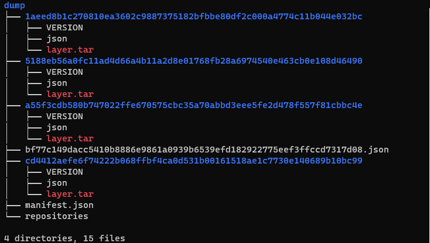
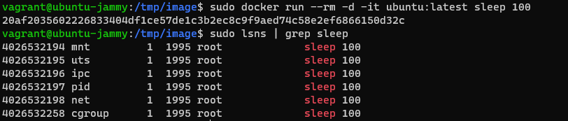
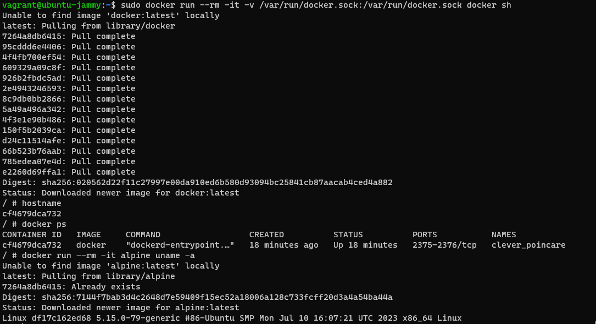
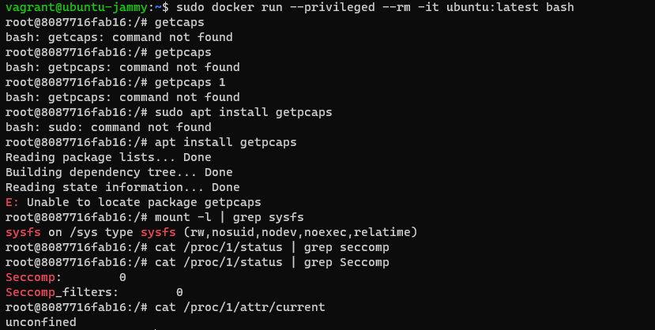

コンテナ入門する
昆虫ロック弾けるようになりたい
コンテナ
コンテナはプロセス自体は同じ OS で動いていて，これを OS のカーネル機能によって隔離する． 使えるリソースを分離して，ホスト OS で動くプロセスとか他のコンテナから独立した空間を作る． カーネルに「コンテナ」の仕組みがあるわけではなく，namespace とか cgroup みたいな いくつかのシステムを組み合わせてコンテナを作っている． なので Docker や LXC で作りが違う
メリット
- コンテナはプロセスなので起動速度はプロセスに近い
- VM と比較してエミュレートの必要がないためオーバーヘッドがすくない
- アプリケーションだけをコンテナ起動できる
デメリット
- 異なる OS 用のバイナリは動かない
- 基本のカーネルは同じなのでカーネルの操作はできない
基本技術
CRI/OCI
- CRI: ユーザからの要求を受けてコンテナとの通信をする．イメージの取得や展開，ネットワークのセットアップなど．コンテナの直接の操作は低レイヤランタイムに命令を出す．containerd とか CRI-O.
- OCI: 高レイヤランタイムから命令を受けて，コンテナとして実行するプロセスをホストから分離して実行する．runc とか crun.
レイヤ
コンテナイメージはレイヤの集合体で，コンテナ実行時にこれらがマージされる．
- layer:ルートファイルシステムのデータ
- .json:実行環境を再現するための情報

ファイルシステム
コンテナ内とホストではファイルシステムを分離したいことが多い． このとき，ホスト内にあるディレクトリをコンテナの root ディレクトリにする．
chroot: プロセスのルートディレクトリを変更することができる． ただし jailbreak が可能なので chroot を使う場合はコンテナの chroot の capability を剥脱する必要があるが(CAP_SYS_CHROOT)，ユースケース的に不便なことも多いのでデフォルトでは剥奪しない． 代わりに pivot_root を使う
pivot_root: ルートファイルシステムを入れ替える． ファイルシステムごとに入れ替えるので，コンテナ側からは root のファイルシステムを見ることはできない． また，pivot_root には厳しい条件がある．
namespace
コンテナ側からはホストのプロセスを見ることができない． これは namespace によって OS のリソースを分離しているから．

cgroup
プロセスに対してリソースの制限を行うシステム． 特定のプロセス（群）に対してメモリの使用量やコア数を制限することができる．
seccomp
システムコールとその引数を制限する． Mode1 は read, write, exit, sigreturn しか許可されていないが，Mode 2 ではもう少し広い． コンテナではホストや他コンテナに大して影響あるシステムコールを発行できないようになっている．
LSM
強いアクセス制御で，root であってもアクセス制御の対象にされる． appArmor, SElinux
DooD
コンテナ内でコンテナを使いたい場合がある
- ホストの Docker プロセスを使う場合，socket 経由で Docker デーモンに命令する．
- Docker プロセス内で新しく Docker コンテナを作成する．

セキュリティ
Runtime vuln
ランタイム自体に脆弱性がある． 実行ミスや capability, seccomp プロファイルの不備
kernel vuln
カーネル自体に脆弱性がある． コンテナはホストとカーネルを共有しているので影響がある． 他にもコンテナに特定の capability が付与されているとそれを手がかりにして脆弱性が機能する．
–privileged
特権コンテナはホスト上のデバイスへアクセスできるかる appArmor などの LSM を適用せず， かつ capability も過剰にもらっているので適切に隔離されていないホストのプロセスのようになる． これを侵害すればホストにエスケープできる可能性がある．
